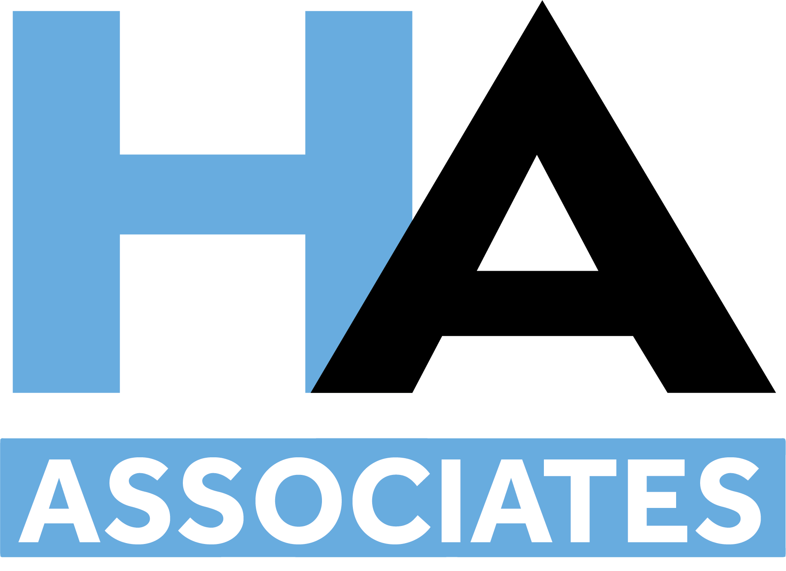
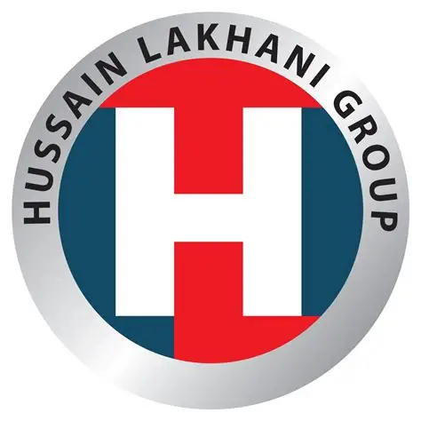
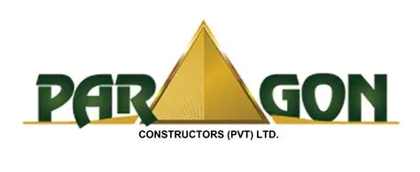
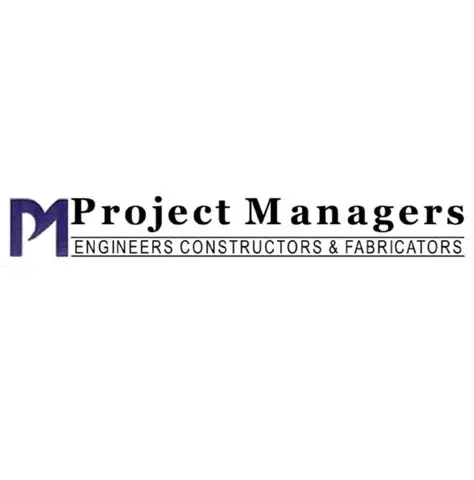
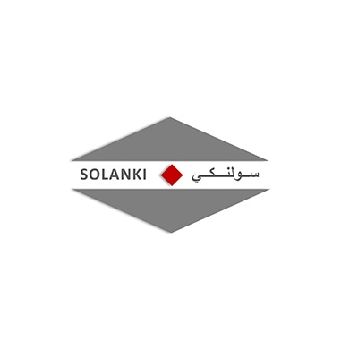
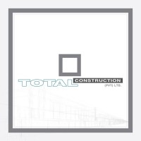
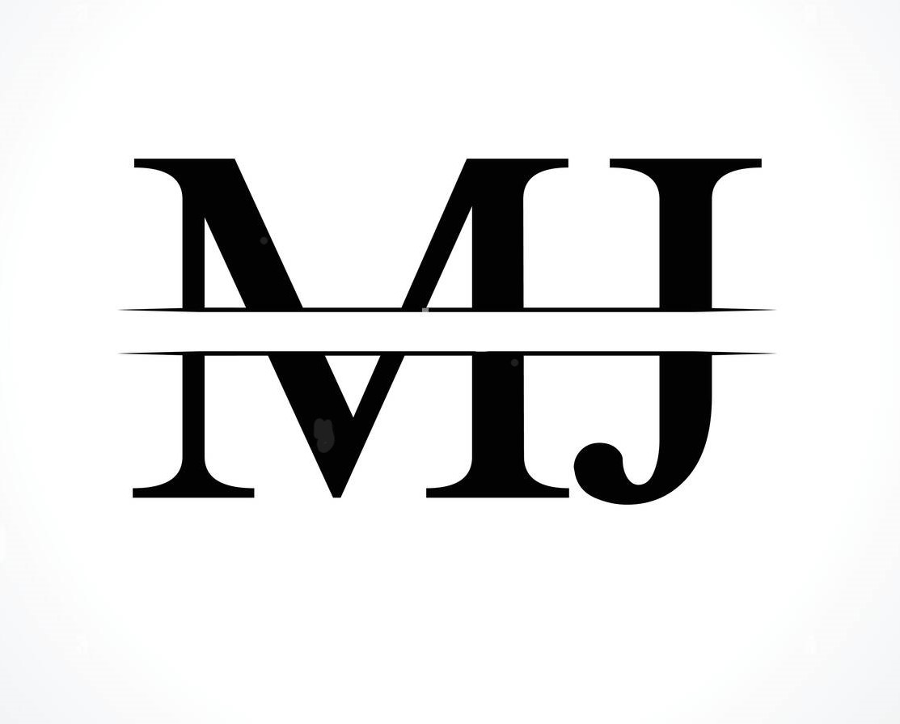

Professional Experience
-

1994: H.A. Associates Engineers & Contractors, Karachi – Site Supervisor - 1995-1997: Steel Man International, Badin Oil Fields – Assistant Engineer
-

1998: Husain Construction Company, Karachi – Assistant Engineer - 1999: Shahzad Associates, Sindh – Assistant Engineer
-

2000: Paragon Construction, Karachi – Site In-Charge -
 2001-2005: Total Construction, Karachi – Site In-Charge
2001-2005: Total Construction, Karachi – Site In-Charge
-

2005-2006: Project Managers, Karachi – Project Engineer - 2006-2009:NESPAK National Engineering Pakistan – Assistant Resident Engineer
-

2009-2010: Solanki Engg. & Cont. Co. – Project Engineer -

2010-2019: Total Construction – Various Projects (Meezan Bank, Honda Atlas, Dolmen Mall, Schools) -

2019-2023: MJ Construction – Director (Banglows, Interior ID Work, Tabba Hospital Extensions) -
 2024-Present: Total Construction – Construction Manager, Agha Khan Historical Place Rehab
2024-Present: Total Construction – Construction Manager, Agha Khan Historical Place Rehab